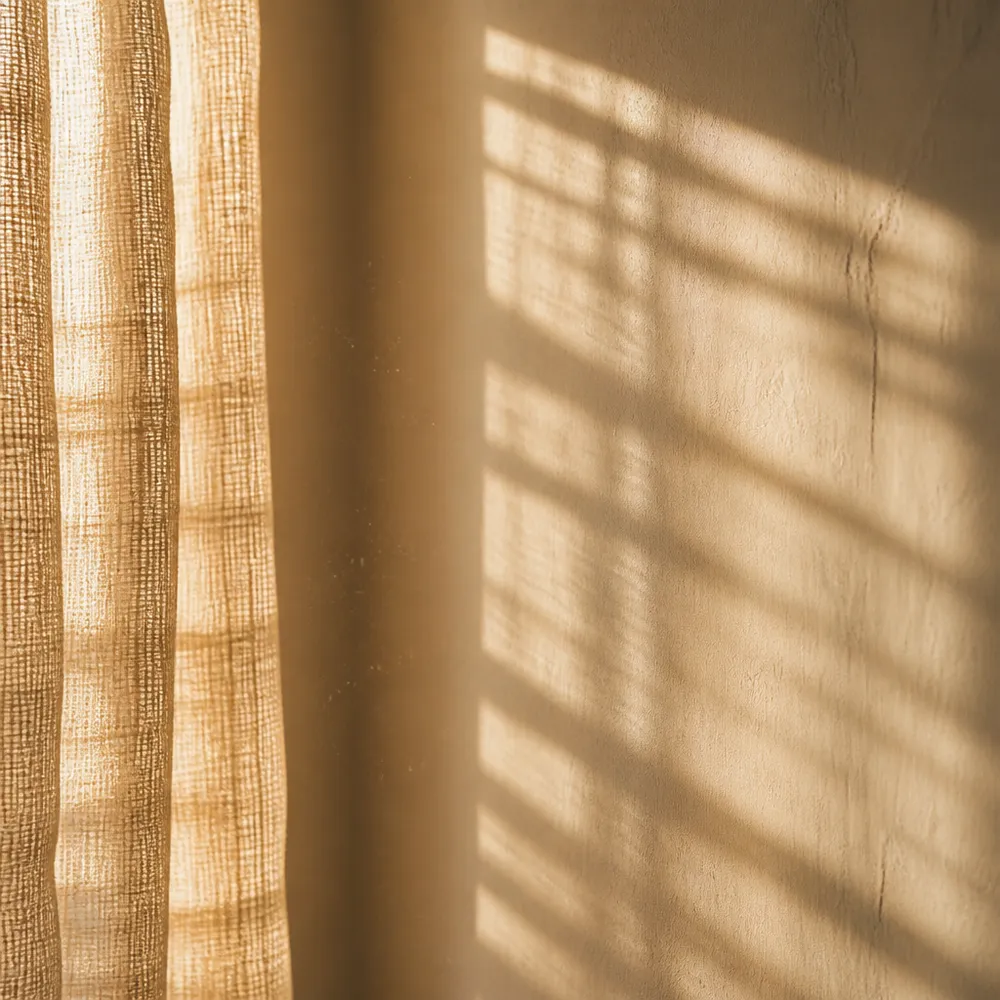

Surface
What is on your skin
Texture, fine lines, hydration and the state of your barrier. It's the fastest of the three to respond, and the only one a cream can reach.
The Skin Diagnostic
6 questions about your skin, your diet and your week, and you get a free 90 day routine built around what your answers point at: what to do, in what order, and what to stop spending money on. Most of it costs nothing.
Your routine shows on the next screen.
Why routines fail
Three different problems look identical in the mirror, and only one of them answers to what you put on your face. The quiz works out which one is yours.
Three things started in the same month, all abandoned by week six, and no way of knowing which one was working.
Eight hours and a good routine, and the face looking back at you still has a grey cast to it.
Skin that creases and stays creased. The expensive cream didn't touch it, and there's a reason for that.
What the quiz checks
Texture, fine lines, hydration and the state of your barrier. It's the fastest of the three to respond, and the only one a cream can reach.
It shows up in elasticity first, then in your hair and nails. Nothing you put on your face gets anywhere near it.

Stress, short nights, sun, a glass of wine most evenings. It's the one behind a dull, tired look on a rested face, and almost nobody checks it.
So which of the three is yours?
The quiz works it out in 45 seconds.
What you get at the end
Which of the three is driving what you see, which one is supporting it, and which one you can leave alone for now.
Harsh chemicals out of your bathroom and then out of the house, protein at breakfast, ten minutes of daylight, meditating with a relaxed face. One at a time, so you can tell what each one did.
The things in your lane that aren't worth buying, and why. This is usually the part women tell us they wish they'd read first.
At the end, underneath the free plan, and ranked. It's optional, and the routine works without it.
All of it on the next screen. Free, and there's no account to make.
6 questions, 45 seconds
It's free, there's no account, and you can start the routine tomorrow morning without buying a thing.
Your routine shows on the next screen.
This quiz is for educational and informational purposes only. It is not medical advice, it is not a diagnosis, and it does not replace an assessment by a clinician. Individual results vary with skin type, routine, lifestyle and consistency. If you are pregnant, nursing, managing a skin or thyroid condition, or taking medication, talk to your healthcare provider before changing your routine or adding a supplement.